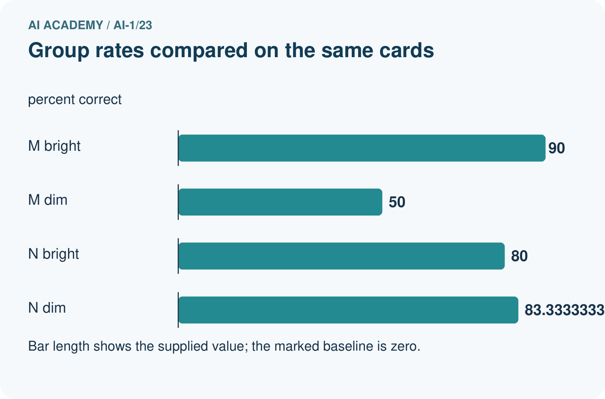
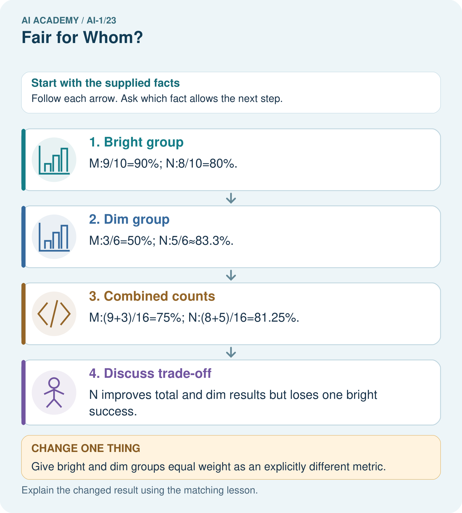
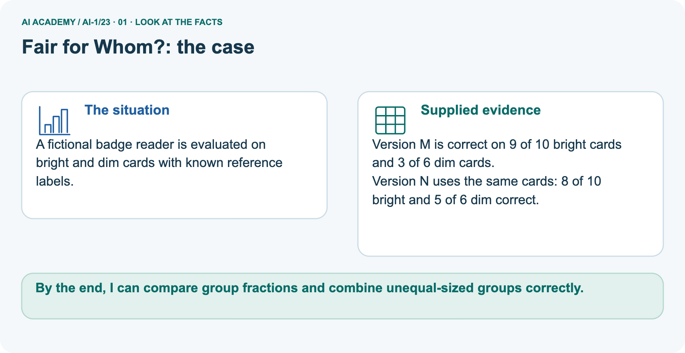
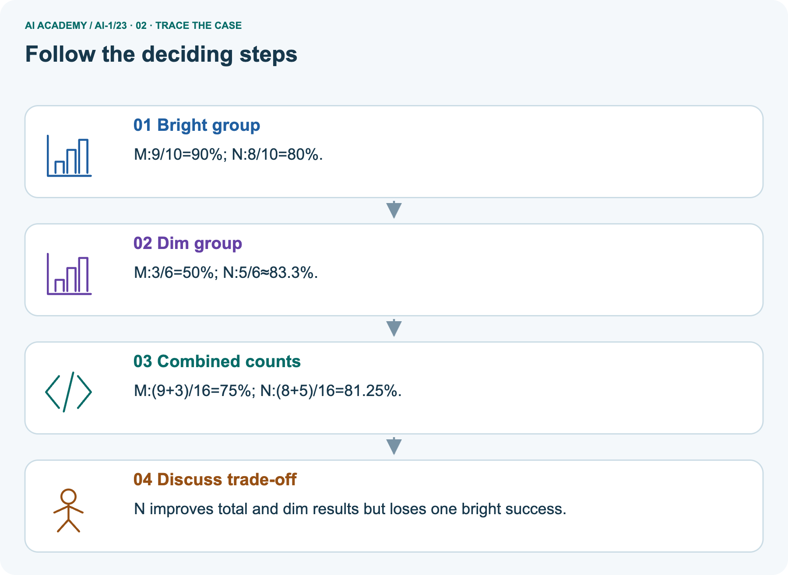
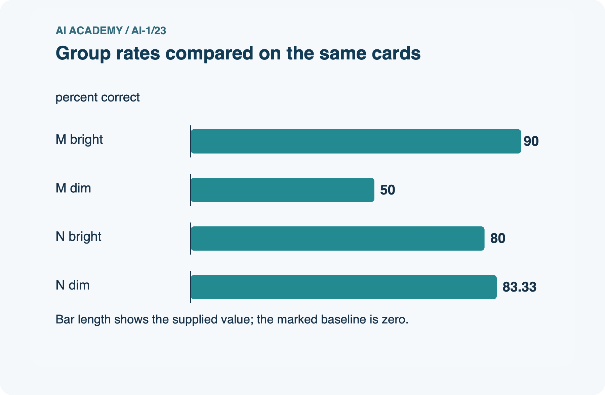
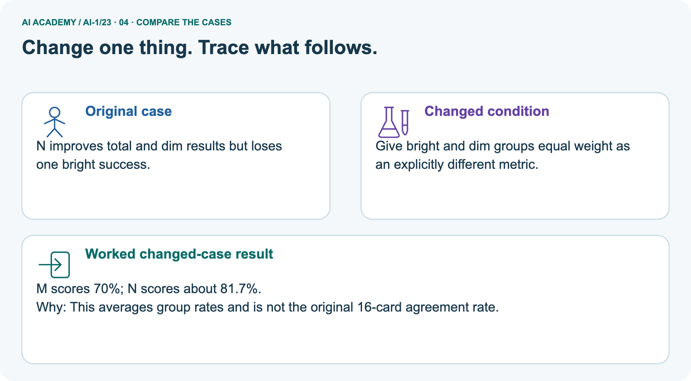
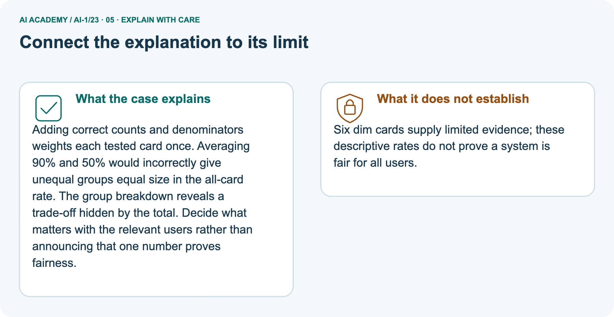
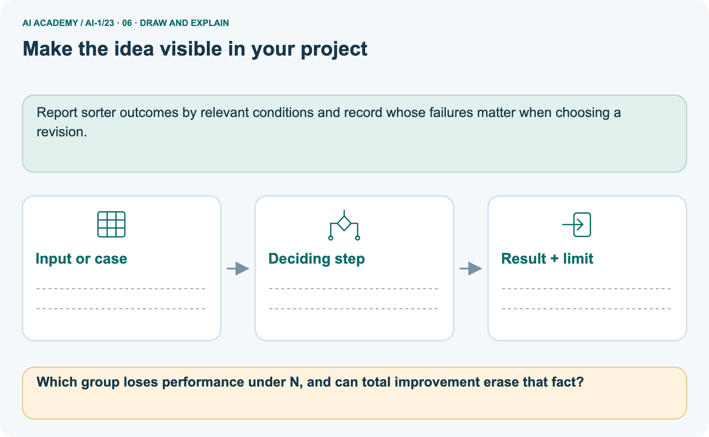

AI Academy · Level 1 · Grade 6 · Week 23 · Teacher guide
Fair for Whom?
Learn to understand, design, build, test and explain AI systems responsibly.
Project: Helpful Classroom Sorter
Teacher guide · 1 of 9
Fair for Whom?
Prepare Fair for Whom?: check the target, prerequisites, resources and adaptable teaching schedule.
Teach the learning cycle
Primary target: Compute a correct-out-of-assessed fraction and explain its denominator
| Session | Sequence and minutes | Resources |
|---|---|---|
| Session 1 · Understand · 45 min | 0–7: recall and prerequisite; 7–15: inspect the concrete case and predict; 15–30: teacher models the worked trace; 30–40: learners explain a step using the text and visual; 40–45: check the core idea. | Sections 1–6; record the brief recall in the workbook. |
| Session 2 · Practise · 45 min | 0–5: retrieve the procedure; 5–15: W2 completion practice; 15–23: explain and check with a partner; 23–30: each learner answers the misconception check; 30–40: targeted reteaching or a harder variation; 40–45: prepare the investigation. | Sections 7–10; use the matching workbook W2 and misconception check. |
| Session 3 · Investigate and transfer · 45 min | 0–5: retrieve the decision rule; 5–20: investigate or trace; 20–30: start the independent case; 30–38: connect the project; 38–43: act on feedback; 43–45: plan the return check. | Sections 9 and 11–14. Give extra time to finish the full task set; use Section 15 when the week includes a coding lab. |
This is a starting allocation of 135 minutes, not a validated duration. Preserve all named topics. Schedule extra time for connected examples, the full investigation, independent cases and project building.
Repeated copies of a case share one recorded attempt; they are not new evidence.
Retrieval answer guidance
Missing and Unbalanced Examples
Without opening the old lesson, explain one key idea from Missing and Unbalanced Examples. Give an example and a mistake that the idea helps you avoid.
Look for: Name the target collection, selection list and cases actually assessed
Reference example, not the only acceptable wording: The target is all 24 specified cards across four conditions. The sample is the 6 bright-circle cards. Dim circles, bright squares and dim squares are absent.
A frame containing only bright-circle IDs excludes every other condition, regardless of how randomly IDs are drawn from it.
Recommendations
Without opening the old lesson, explain one key idea from Recommendations. Give an example and a mistake that the idea helps you avoid.
Look for: Apply eligibility requirements before ranking candidates by preferences
Reference example, not the only acceptable wording: J eligible scores 2; K eligible scores 1; L excluded for Spanish; M excluded because unavailable. Recommend J.
Preference matches cannot compensate for failing the English requirement.
Prediction Is Not Fact
Without opening the old lesson, explain one key idea from Prediction Is Not Fact. Give an example and a mistake that the idea helps you avoid.
Look for: Separate a recorded prediction from the observation used to check it
Reference example, not the only acceptable wording: Input height 6 cm; prediction far because 6 is at least 6; observed distance 3 units; observed category near because 3 is below 4; mismatch.
Height is available to the model before the trial, while travel distance is measured afterward to check its prediction.
Use the student module and workbook section with this exact week title. The worked case, independent question and answers below form one aligned lesson sequence.
What the learner must demonstrate
System A succeeds on 6 of 8 quiet tests and 3 of 4 noisy tests. Is its noisy success rate lower? Show fractions and percentages. What can these small tests not establish?
Concept to explain
Fairness requires checking outcomes for different users and situations.
| Term | Meaning |
|---|---|
| fairness | reasoned treatment of outcomes across people and situations |
| subgroup result | performance measured for one relevant group |
| gap | difference between group outcomes |
| error cost | harm or burden caused by a mistake |
Prepare the class
Use the supplied scenario, student illustrations and blank paper. For numeric work, offer counters or a calculator after learners show the setup. Fictional records are supplied; personal data and paid accounts are unnecessary.
Alternative compact allocation
This compact option is not the full-week schedule. Use the main teaching cycle and allow extra sessions for the investigation, independent work and project.
Allow 80 minutes: recall 8; explanation 12; worked demonstration 15; guided practice 20; independent assessment 15; project and reflection 10. Extend the lab into a second session when needed.
Preparation for the connected explanation
Keep the metric definition visible: this lesson measures accuracy among assessed classification outcomes and separately reports unassessed selected cases.
It does not teach that missing system outputs should always be removed from every real evaluation; an end-to-end task may define output failure as a failure. Here, the scoring scope and unavailable records are explicit.
Fractions compare observed proportions, not certainty or individual confidence.
Readiness answer
Seven are assessed. Report the one unassessed case separately and explain why its outcome is unavailable; do not silently count it as correct or incorrect.
The shared A/B card counts from the lesson and two colours of counters for correct and incorrect outcomes
Paper fraction strips partitioned into 4 and 12 equal parts
The independent X/Y sound counts in W4 and a place to record missing outcomes separately
End goal for the pictorial case
By the end, I can compare group fractions and combine unequal-sized groups correctly.
This added worked case illustrates the week’s main idea. Retain all original and connected topics; schedule its practice within the teaching cycle.
Teacher guide · 2 of 9
Explain the mechanism
Model Fair for Whom? using the supplied case, labelled mechanism and reasoning. Make the scope of each conclusion explicit.
Follow the information instead of imagining magic inside the machine.
1. Input — information entering
INPUT test cases grouped by relevant user or condition
2. Process — the deciding step
PROCESS compare outcomes and error types by group
3. Output — the result
OUTPUT identify gaps and choose a repair or boundary
Key idea
CORE IDEA Fairness requires checking outcomes for different users and situations.
How the mechanism works
UNDER THE HOOD Fairness is context-specific and cannot be established by overall accuracy alone. Compare performance, error costs, access, and remedy across relevant groups while avoiding stereotypes and protecting privacy.
Draw a fresh example with all three stages:
Every step connects a claim to observable evidence.
The case to investigate
CASE A voice game may work well overall yet miss more commands from quiet speakers than loud speakers.
Step 1
STEP 1 — OBSERVE test cases grouped by relevant user or condition
Step 2
STEP 2 — TRACE compare outcomes and error types by group
Step 3
STEP 3 — CONCLUDE identify gaps and choose a repair or boundary
Model answer
MODEL REASONING Report each group's success count and error pattern, not only the total. Improve microphone/process testing with consented varied voices and keep a non-voice control so access does not depend on one input mode.
A claim to avoid
DO NOT OVERCLAIM Fairness work should reduce burdens without turning group labels into stereotypes.
What new evidence could change this answer?
Concrete teaching case
The teaching case
A voice system succeeds on 8/10 quiet and 4/10 noisy recordings.
The teaching case
Compare and propose the next investigation.
Exact explanation to model
Why the result follows
The rates differ. Test more varied recordings under controlled conditions and inspect other factors before claiming a cause.
Explain the added worked example
Explain the added worked example · 1
For this week, accuracy means the number of correctly labelled cases divided by the number of assessed cases.
Every assessed case has a system label and a checked reference label, so its result can be judged correct or incorrect. State the system version, cases and scoring rule with the fraction.
Cases without an assessable outcome are reported separately.
Explain the added worked example · 2
Two fixed shape-recognition versions, A and B, label the same 12 previously unseen picture cards. Eight cards are bright and four are dim; each has a checked circle or square reference label.
Both versions return labels for all 12. A is correct on 8 bright and 1 dim card. B is correct on 6 bright and 2 dim cards.
A therefore has 9 correct out of 12 assessed, written 9/12. Dividing numerator and denominator by 3 gives 3/4. Three quarters equals 75 out of 100, or 75%. B has 8/12, equal to 2/3.
For this comparison keep B as an exact fraction; a rounded percentage is unnecessary.
With the same denominator 12, compare the numerators: 9 is greater than 8. A is correct on one more of these cards.
This establishes the ordering on this test under this scoring rule; it does not prove that A will always outperform B on future cards.
To compare fractions with different denominators, rewrite them as equivalent fractions with a common denominator. For example, 3/4 equals 9/12 and 2/3 equals 8/12.
Changing the written denominator does not create new test cases: it only helps compare the proportions.
Key terms
| Term | Meaning |
|---|---|
| Numerator | The count above the fraction line; here, assessed correct cases |
| Denominator | The count below the fraction line; here, all assessed cases |
| Equivalent fractions | Different written fractions that represent the same proportion |
| Accuracy | The fraction of assessed classification cases labelled correctly under a stated rule |
| Aggregate | A result formed by combining the counts of several groups |
Model the reasoning aloud
Use the complete worked example below before asking learners to complete W2. Reveal a small part, invite a prediction, then explain the deciding step.
These teacher notes contain solutions; do not reveal the independent case answer during modelling.
| Question | Version A | Version B |
|---|---|---|
| Bright-card accuracy | 8/8 = 1 | 6/8 = 3/4 |
| Dim-card accuracy | 1/4 | 2/4 = 1/2 |
| Combined accuracy | (8 + 1)/(8 + 4) = 9/12 | (6 + 2)/(8 + 4) = 8/12 |
Model the reasoning aloud · 3
The bright group has twice as many assessed cards as the dim group. Each individual card counts once in the combined result, so add correct counts and assessed counts.
Do not simply average the two group percentages and call it the all-card accuracy: that would give each group equal weight despite their different sizes.
Model the reasoning aloud · 4
If the intended task especially needs dim-card performance, inspect that result and gather suitable additional evidence before choosing. An overall leader can still be weaker in a relevant condition.
This table alone also does not tell us whether particular mistakes have different consequences. The scoring rule must match the purpose.
| Thinking move | Teacher prompt |
|---|---|
| Plan | What is given? What is the question? Which procedure fits these facts? |
| Do | Point to each input and intermediate step in the worked trace. Name the rule that allows the next step. |
| Check | Does the output answer the question? Which assumption or limitation prevents a larger claim? |
Use the diagram and verbal explanation together. Ask learners to match a sentence to a specific visual step; do not assign learners fixed visual or auditory learning styles.
A pictorial worked case: Fair for Whom?
A fictional badge reader is evaluated on bright and dim cards with known reference labels.
The facts we will use
Supplied facts
Version M is correct on 9 of 10 bright cards and 3 of 6 dim cards.
Supplied facts
Version N uses the same cards: 8 of 10 bright and 5 of 6 dim correct.


Read the picture one step at a time
Why this result follows
Why the result follows
Adding correct counts and denominators weights each tested card once. Averaging 90% and 50% would incorrectly give unequal groups equal size in the all-card rate. The group breakdown reveals a trade-off hidden by the total.
Decide what matters with the relevant users rather than announcing that one number proves fairness.
What this example does not establish
Keep the stated limit
Six dim cards supply limited evidence; these descriptive rates do not prove a system is fair for all users.
Change one thing in the pictured case
Change one thing
Change: Give bright and dim groups equal weight as an explicitly different metric.
Predicted result
Prediction: M scores 70%; N scores about 81.7%.
Why the result follows
Reason: This averages group rates and is not the original 16-card agreement rate.
Ask while showing the picture
Ask while showing the picture · 5
Cover the result. Ask learners to name the inputs and predict the next step. Uncover one step, connect the icon to the actual procedure, and explain its evidence. Then change the supplied condition and compare.
The picture is a representation; it does not document execution of a real AI model.
Teacher guide · 3 of 9
Demonstrate and guide practice
Demonstrate Fair for Whom?, reduce support deliberately and check individual reasoning before discussing answers.
Board sequence
1. Put the facts on the board
Write the given facts: A voice system succeeds on 8/10 quiet and 4/10 noisy recordings.
2. State the decision to explain
Write the question to explain: Compare and propose the next investigation.
3. Reveal the worked reasoning
Reveal after predictions: The rates differ. Test more varied recordings under controlled conditions and inspect other factors before claiming a cause.
Hold back the independent task
Keep for an independent attempt: A helper succeeds on 4 of 4 clear voices and 1 of 4 quiet voices. Who is less well served? What evidence should a repair preserve?
Classroom dialogue
Ask the class
Ask: Which facts are given, and which would we have to assume? Learners mark relevant details before discussing answers.
Language to model
Say: Predict first. Show the rule, information path or calculation that would produce the result. A correct guess is not yet an explanation.
Reveal reasoning one step at a time. Explain why a tempting alternative fails. Write units and denominators for arithmetic, trace conditions for decisions, and identify supporting sources for claims.
In pairs, one learner solves while the other checks evidence; exchange roles. Remove the worked answer before independent assessment.
Model these guided questions
C has 9/10 correct among assessed outcomes, with 2 unassessed out of 12 selected. A has 9/12 across all 12.
The assessed sets differ, so recover C’s lost results or compare all versions on an explicitly documented common assessed subset using case-level records. A’s score on that subset cannot be inferred from the totals.
Exit: 6/10 = 60% across cases; averaging 100% and 50% gives 75% with equal weight to the two groups, a different summary.
Case-specific teaching sequence
| Stage | Teacher action |
|---|---|
| Session 1 start 0 to 7 minutes | Retrieve selected versus assessed counts from Week 22. |
| 7 to 20 minutes | Model 9 correct and 3 incorrect counters. Explain denominator 12 and complete W1. |
| 20 to 33 minutes | Use fraction strips to compare 3/4 and 2/3 in twelfths. Trace the diagram. |
| 33 to 45 minutes | Complete W2 and discuss the overall and dim-condition leaders. |
| Session 2 start 0 to 8 minutes | Retrieve why the incorrect cases stay in the assessed denominator. |
| 8 to 23 minutes | Complete the guided C comparison and W3. Keep unknown cases separate and avoid inventing A’s subset score. |
| 23 to 38 minutes | Collect W4 independently. Require totals, percentages, condition comparisons and a bounded claim. |
| 38 to 45 minutes | Complete W5 and the exit. Use counters to show why combined case counts differ from an equal-group average. |
Reduce help deliberately
Completion practice
Completion task: Compare A and B on the shared 12-card test and on its bright and dim groups. State the leader in each and explain why the overall result does not imply that one version wins in every condition.
Reasoning to listen for
Teacher check: Overall A leads 9/12 to B’s 8/12. On bright cards A leads 8/8 to 6/8. On dim cards B leads 2/4 to A’s 1/4.
The overall count combines unequal groups; A’s overall lead does not mean a lead in the dim group or a guarantee for future cards.
Start by identifying the given inputs together. Leave the intermediate steps blank. If needed, model one step, then withdraw that help on the next step. Move to a full trace only when the partial trace is understood.
For partners, alternate explainer and checker; collect a response from every learner before discussion.
Individual reasoning check
Use the worked case for Fractions and performance comparisons. Proposed explanation: “Only correct cases belong in the denominator”. Decide whether this explanation is supported.
Point to the step or supplied fact that decides; explain your repair if needed.
Expected repair
Expected correction: All assessed cases, including errors, belong in the assessed-accuracy denominator.
Collect explanations, not only yes/no votes. If a misunderstanding is common, re-model the relevant step for the class.
If it affects a few learners, give a short targeted group explanation while others solve a more demanding variation.
Pictorial practice question
Which group loses performance under N, and can total improvement erase that fact?
Reasoned teacher answer
Bright drops from 90% to 80%. No; retain the subgroup result alongside the improved total.
Changed-case reasoning: M scores 70%; N scores about 81.7%. This averages group rates and is not the original 16-card agreement rate.
Collect each learner’s explanation before discussion. Use the first missing connection between input, deciding step and result to choose support. This question is worked-case practice, not fresh mastery evidence.
Teacher guide · 4 of 9
Run the weekly evidence lab
Run the Fair for Whom? investigation and use the first unsupported step to choose a teaching response.
Predict first, test honestly, and explain what the evidence means.
1. Predict
State your prediction before the result is known.
2. Investigate
Complete the task: Run a voice-game test for quiet and loud speakers.
3. Compare cases
Keep a normal case and an edge case clearly separated.
4. Record honestly
Record what happened—even when it does not match your prediction.
5. Explain and plan the next test
Explain the result, one limitation, and the next useful test.
Use a fresh case after support
INDEPENDENCE After support is removed, repeat the proof with a fresh case.
Make the lab runnable
Use the concrete case as the shared normal case and the independent question as a second case. Each pair creates a boundary or missing-information case and predicts its result before testing.
Keep the expected result separate from an observed mistake.
| Record | What to capture |
|---|---|
| Input or evidence | Exact data, instruction or claim |
| Expected result | Answer or safe fallback declared before the run |
| Observed result | Actual result, including errors |
| Explanation | Rule, calculation or evidence explaining the outcome |
| Next test | One justified change and a new prediction |
Diagnose and reteach
Find the unsupported claim
CLAIM TO REPAIR A good result for one group means everyone is served well.
For guessing, return to given facts and request a trace. For vocabulary without application, use one example and one non-example. For arithmetic errors, check the setup before the calculation.
Finish with a different uncoached case before recording mastery.
Address these additional misconceptions
Only correct cases belong in the denominator: All assessed cases, including errors, belong in the assessed-accuracy denominator.
Equivalent fractions mean equal test sizes: The proportions match, but 4 assessed cases are not 100 assessed cases; preserve actual counts.
The overall leader wins in every condition: The lesson’s dim group and W4’s quiet group provide counterexamples.
Average group percentages to get all-case accuracy: Add correct counts and assessed counts when each individual case is weighted equally.
Match the support to the first error
| What the response shows | Next teaching action |
|---|---|
| Missing or misread facts | Read the case aloud, mark supplied versus unknown facts, and let the learner restate it. |
| Wrong procedure | Return to the deciding step in the worked case. Contrast it with the proposed incorrect explanation. |
| Arithmetic or implementation error | Trace intermediate values or lines; preserve the first mismatch and retry that step. |
| Correct result without a reason | Ask for a trace and a changed case before marking independent understanding. |
| An unsupported wider claim | Ask which supplied evidence supports the claim and which further observation would be needed. |
Offer an oral explanation, drawing, enlarged visual or fewer examples when that removes a reading/writing barrier. Keep the same reasoning goal.
Stretch secure learners by changing a boundary or assumption and asking them to defend the effect, not simply by assigning more of the same questions.
Teacher guide · 5 of 9
Assess and explain the answers
Use the Fair for Whom? questions, teacher keys and criteria after the relevant attempts. Previously discussed cases are practice; protect the separately selected independent task.
Worked case answer
Teacher key · Worked case answer
The rates differ. Test more varied recordings under controlled conditions and inspect other factors before claiming a cause.
Independent question
Independent question · withhold the key
A helper succeeds on 4 of 4 clear voices and 1 of 4 quiet voices. Who is less well served? What evidence should a repair preserve?
Expected independent answer
Teacher key · Expected independent answer
Quiet voices are less well served on these examples. Keep separate counts and test quiet voices after a repair. These small counts flag a concern without proving all users will experience it.
What counts as evidence
| Criterion | 0 points | 1 point | 2 points |
|---|---|---|---|
| Result | Incorrect or absent | Partly correct | Correct with necessary conditions |
| Reasoning | No supporting trace | Some steps | Clear mechanism, calculation or source support |
| Limit | Overclaims certainty | Vague limitation | Relevant uncertainty or missing fact |
| Transfer | Copies without adapting | Adapts with prompts | Solves a changed case independently |
Use 6/8 as a classroom checkpoint, with 2 required for both Result and Reasoning. This is a proposed teaching rule, not a validated certification threshold.
Do not count a coached answer as independent mastery; correct unsafe or unsupported claims regardless of total.
Feedback
Ask the learner to find the evidence that challenges this claim: “A good result for one group means everyone is served well.” Keep the first attempt and an uncoached retry separate.
Original transfer answer
Teacher key · Original transfer answer
Both are 3/4=75%. Three successes is fewer in count, but not a lower rate. These small samples do not prove equal performance in all quiet and noisy conditions. Collect more varied comparable cases before making a broad claim.
Explanations for the additional workbook examples
W1 Explain both parts of a performance fraction
Workbook question · W1
For version A in the lesson, write correct and assessed counts, simplify the accuracy fraction and express it as a percentage. Explain what its denominator includes and why 9/9 would be misleading.
Teacher reasoning · W1
A has 9 correct out of 12 assessed: 9/12 = 3/4 = 75%. The denominator includes all 12 judged outcomes, including 3 incorrect ones. Using 9/9 would exclude the errors and falsely report perfect assessed accuracy.
W2 Compare totals and conditions
Workbook question · W2
Compare A and B on the shared 12-card test and on its bright and dim groups. State the leader in each and explain why the overall result does not imply that one version wins in every condition.
Teacher reasoning · W2
Overall A leads 9/12 to B’s 8/12. On bright cards A leads 8/8 to 6/8. On dim cards B leads 2/4 to A’s 1/4.
The overall count combines unequal groups; A’s overall lead does not mean a lead in the dim group or a guarantee for future cards.
W3 Do not hide unassessed outcomes
Workbook question · W3
C has 9 correct and 1 incorrect assessed outcome, with 2 other selected cases unassessed. Write its assessed accuracy and missing count. A reviewer reports 9/12 as assessed accuracy; another reports 90% on all 12.
Explain the problem with each label.
Teacher reasoning · W3
C has 9/10 = 90% assessed accuracy and 2 unassessed outcomes. The denominator 12 includes cases not assessed, so 9/12 is the fraction of selected cases with verified correct outcomes, not assessed accuracy.
Reporting 90% on all 12 incorrectly extends the assessed-subset fraction to missing outcomes.
W4 Compare a new shared sound test
Workbook question · W4
Versions X and Y label the same 20 previously unseen clips: 12 quiet and 8 noisy, with no missing outcomes. X is correct on 10 quiet and 2 noisy clips; Y on 9 quiet and 5 noisy clips.
Calculate each combined fraction and percentage, identify the overall leader and compare the leaders within each group. Explain why an overall result cannot guarantee the next clip’s outcome.
Teacher reasoning · W4
X has (10 + 2)/(12 + 8) = 12/20 = 3/5 = 60%. Y has (9 + 5)/20 = 14/20 = 7/10 = 70%, so Y leads overall. X leads quiet clips 10/12 to 9/12, while Y leads noisy clips 5/8 to 2/8.
These are observed results on this shared test; they do not determine the outcome of the next clip or show that Y is better in every condition.
W5 Combine counts rather than group percentages
Workbook question · W5
A separate test has 2 correct out of 2 assessed in group P and 4 correct out of 8 assessed in group Q. Calculate combined accuracy as a fraction and percentage. A chart reports 75% by averaging the group percentages.
Explain why that is not the accuracy over all assessed cases.
Teacher reasoning · W5
There are 6 correct out of 10 assessed: 6/10 = 3/5 = 60%. The unweighted mean of 100% and 50% is 75%, but it treats the two differently sized groups equally.
All-case accuracy counts each case once, so the larger group contributes 8 of the 10 cases.
Assess independent transfer
Independent question · withhold the key
Selected case: Versions X and Y label the same 20 previously unseen clips: 12 quiet and 8 noisy, with no missing outcomes. X is correct on 10 quiet and 2 noisy clips; Y on 9 quiet and 5 noisy clips.
Calculate each combined fraction and percentage, identify the overall leader and compare the leaders within each group. Explain why an overall result cannot guarantee the next clip’s outcome.
Selected case answer
Teacher key · Selected case answer
X has (10 + 2)/(12 + 8) = 12/20 = 3/5 = 60%. Y has (9 + 5)/20 = 14/20 = 7/10 = 70%, so Y leads overall. X leads quiet clips 10/12 to 9/12, while Y leads noisy clips 5/8 to 2/8.
These are observed results on this shared test; they do not determine the outcome of the next clip or show that Y is better in every condition.
| Dimension | Evidence required |
|---|---|
| Explanation | Names the applicable idea or procedure and ties it to the supplied facts. |
| Trace and result | Preserves the given inputs and shows the relevant intermediate steps; distinguishes a prediction from an observed execution. |
| Limits | States the assumptions, missing evidence or conditions under which the result would change. |
Teacher key · Selected case answer
Record each dimension as not yet, with support, or independent. Accept a valid alternative procedure with a defensible trace.
Do not penalise an honestly recorded model failure if the learner correctly explains its evidence and limits.
Feedback that the learner uses
Name the earliest unsupported step and give one action to repair it. Have the learner make that repair now and explain why. Then assess the relevant skill on a fresh, fully specified case.
Confirm it was not previously practised with feedback; solve and check the new case before assigning it. A follow-up design prompt is a starting brief, not automatically an equivalent test.
Teacher guide · 6 of 9
Connect and extend learning
Connect Fair for Whom? to Helpful Classroom Sorter, adapt support and plan a later changed-case check.
Helpful Classroom Sorter
Test the sorter across relevant item conditions and users; never infer sensitive identity to create a fairness check.
Keep the decision, input, result, explanation and remaining limitation in the project evidence record. Retrieve this record next week rather than restarting the project.
Support and stretch
Use physical cards, spoken explanations and a three-stage drawing. Read aloud without giving the answer. Stretch: compare two mechanisms with the same visible output and explain what evidence distinguishes them.
Exit reflection
Ask for one decision the learner can now justify and one situation requiring more evidence or human review. Confidence ratings are separate from correct independent performance.
Bridge to the next week
Next: Week 24: Privacy by Choosing Less. Retrieve today’s evidence and identify what carries forward and what is new.
Support and fresh reassessment
Use counters and equal-sized fraction strips before percentage notation. Accept exact fractions for group comparisons; rounding is not required.
Extension: describe what per-case records are needed to compare A fairly on C’s ten assessed cases, and why the group totals cannot recover them.
W4 requires X 12/20 = 60%, Y 14/20 = 70%, Y overall, X quiet, Y noisy and no next-case guarantee.
After support change Y’s noisy correct count to 3: Y becomes 12/20 = 60%, tying X overall while X still leads quiet and Y still leads noisy. Require the changed conclusion with unchanged denominators.
Week 24 asks which information a task actually needs and how to reduce unnecessary collection and exposure of personal data.
Plan the delayed return
Suggested return points in this level: ai-1/24, ai-1/26, ai-1/29. Use actual classroom dates, adjusting for holidays and gaps. One, three and six teaching weeks are scheduling choices, not a claimed optimal spacing.
At a delayed check, ask for the idea from memory and a changed application. Compare with the earlier independent response and record support used.
For a new level, revisit the previous capstone before checking the new prerequisites.
| Record | Teacher evidence |
|---|---|
| Learner code and date | |
| Concept and case used; prior exposure | |
| Explanation / trace / limits | |
| Support and first repair | |
| Changed case and delayed outcome | |
| Next teaching action |
Use the evidence to choose reteaching or the next step. A completed page, confidence rating or attractive project does not by itself demonstrate understanding.
Project evidence from this case
Report sorter outcomes by relevant conditions and record whose failures matter when choosing a revision.
Teacher guide · 7 of 9
Prepare, teach and assess
Use this preparation summary alongside the detailed Fair for Whom? lesson; it is a checklist rather than a replacement for the full sequence.
Teaching target
Teaching target: Compute a correct-out-of-assessed fraction and explain its denominator
Prepare the labelled worked-case picture, the matching workbook, fictional input cards and a place for individual responses. No paid AI account is required for the paper reasoning activities.
| Session | Plan | Resources |
|---|---|---|
| Session 1 · Understand · 45 min | 0–7: recall and prerequisite; 7–15: inspect the concrete case and predict; 15–30: teacher models the worked trace; 30–40: learners explain a step using the text and visual; 40–45: check the core idea. | Sections 1–6; record the brief recall in the workbook. |
| Session 2 · Practise · 45 min | 0–5: retrieve the procedure; 5–15: W2 completion practice; 15–23: explain and check with a partner; 23–30: each learner answers the misconception check; 30–40: targeted reteaching or a harder variation; 40–45: prepare the investigation. | Sections 7–10; use the matching workbook W2 and misconception check. |
| Session 3 · Investigate and transfer · 45 min | 0–5: retrieve the decision rule; 5–20: investigate or trace; 20–30: start the independent case; 30–38: connect the project; 38–43: act on feedback; 43–45: plan the return check. | Sections 9 and 11–14. Give extra time to finish the full task set; use Section 15 when the week includes a coding lab. |
Before class, solve the supported practice: Compare A and B on the shared 12-card test and on its bright and dim groups.
State the leader in each and explain why the overall result does not imply that one version wins in every condition.
Supported practice answer
Reasoned practice answer: Overall A leads 9/12 to B’s 8/12. On bright cards A leads 8/8 to 6/8. On dim cards B leads 2/4 to A’s 1/4.
The overall count combines unequal groups; A’s overall lead does not mean a lead in the dim group or a guarantee for future cards.
Check every learner before discussion: Use the worked case for Fractions and performance comparisons. Proposed explanation: “Only correct cases belong in the denominator”. Decide whether this explanation is supported.
Point to the step or supplied fact that decides; explain your repair if needed.
Repair the misconception
Misconception repair: All assessed cases, including errors, belong in the assessed-accuracy denominator.
Support without giving away the answer
Support: read the exact case aloud, enlarge the labelled picture, supply input cards and model only the first deciding step. Accept a spoken explanation or drawing; retain the reasoning goal.
Extend the reasoning
Extension: Give bright and dim groups equal weight as an explicitly different metric. Require a prediction and a reason before comparing. Expected result: M scores 70%; N scores about 81.7%.
Reason: This averages group rates and is not the original 16-card agreement rate.
Protect the independent attempt
Independent assessment: withhold the reserved answer until the learner has attempted the new case. Record support separately from correctness.
| Criterion | Not yet | With support | Independent |
|---|---|---|---|
| Explanation | Names an answer without a deciding fact | Uses a hint to link fact and decision | Explains the deciding fact in own words |
| Trace or test | Cannot connect input and result | Completes steps with prompts | Traces or tests a changed case accurately |
| Limits and revision | Claims more than evidence supports | Names a limit after a prompt | States a defensible limit and useful next test |
Project checkpoint
Project checkpoint: Evaluate and revise. Compare with your starting method, explain errors and record a justified revision.
Use the weekly teacher answer for topic-specific reasoning. A saved progress tick is an activity record; judge mastery from the learner’s explanation and evidence.
Teacher guide · 8 of 9
Use feedback, labs and repair paths
Use feedback, earlier review and portfolios purposefully. Apply the coding routine only when this lesson has an executable lab.
Use the two formative questions as supported practice, not as independent mastery scores. Discuss the deciding evidence rather than accepting a guessed selection.
The feedback comes from the reviewed public worked case. Do not reveal the separately reserved independent teacher answer until the learner has attempted that case.
For later coding lessons
This week has no code block. Use this routine when a later lesson includes an executable lab.
Ask students to predict before running code. Preserve errors and actual outputs; collect a changed test and an explanation. The branch-boundary and indexing lessons deliberately include failure cases.
Use the earlier worked-explanation links to address a specific missing building block, then return to the current question. Adapt this suggestion after observing the learner; it is not an automatic diagnosis.
Collect the completed-work portfolio as evidence. Record support separately from correctness, and assess explanation, trace/test and limitations. Progress ticks and quiz selections alone do not establish mastery.
Teacher guide · 9 of 9
Visual concept journey
Show one Fair for Whom? graphic at a time, request a prediction and discuss its trace before the independent assessment.
Use one picture at a time. Hide a worked result before asking for a prediction, then reveal it for feedback. These are supported teaching cases; retain the separate independent assessment for a fresh first attempt.
01. Fair for Whom?: the case

A fictional badge reader is evaluated on bright and dim cards with known reference labels. Supplied facts: Version M is correct on 9 of 10 bright cards and 3 of 6 dim cards.
Version N uses the same cards: 8 of 10 bright and 5 of 6 dim correct.
Point to the given fact that matters most. Explain why it matters.
Discuss while showing the picture
Teacher prompt: Point to the given fact that matters most. Explain why it matters. Ask learners to describe one label or arrow in ordinary words. Use the adjacent transcript if the image is difficult to see.
02. Follow the deciding steps

Bright group: M:9/10=90%; N:8/10=80%. → Dim group: M:3/6=50%; N:5/6≈83.3%. → Combined counts: M:(9+3)/16=75%; N:(8+5)/16=81.25%. → Discuss trade-off: N improves total and dim results but loses one bright success.
Point to each numbered stage and explain which recorded input it uses.
Discuss while showing the picture
Teacher prompt: Point to each numbered stage and explain which recorded input it uses. Ask learners to describe one label or arrow in ordinary words. Use the adjacent transcript if the image is difficult to see.
03. Group rates compared on the same cards

Group rates compared on the same cards. Units: percent correct. M bright: 90. M dim: 50. N bright: 80. N dim: 83.33333333333333.
Read the labels and values. Explain the relationship the model shows.
Discuss while showing the picture
Teacher prompt: Read the labels and values. Explain the relationship the model shows. Ask learners to describe one label or arrow in ordinary words. Use the adjacent transcript if the image is difficult to see.
Check row/column meanings, units and denominators before discussing a difference. Supplied toy values are not real class or model results.
04. Change one thing. Trace what follows.

Original case: N improves total and dim results but loses one bright success. Changed condition: Give bright and dim groups equal weight as an explicitly different metric. Expected result: M scores 70%; N scores about 81.7%.
Reason: This averages group rates and is not the original 16-card agreement rate.
Predict before checking the worked changed-case result. Name what changed and what the supplied facts allow you to conclude.
Discuss while showing the picture
Teacher prompt: Predict before checking the worked changed-case result. Name what changed and what the supplied facts allow you to conclude. Ask learners to describe one label or arrow in ordinary words.
Use the adjacent transcript if the image is difficult to see. Changed-case reasoning: This averages group rates and is not the original 16-card agreement rate.
05. Connect the explanation to its limit

Adding correct counts and denominators weights each tested card once. Averaging 90% and 50% would incorrectly give unequal groups equal size in the all-card rate. The group breakdown reveals a trade-off hidden by the total.
Decide what matters with the relevant users rather than announcing that one number proves fairness. Limit: Six dim cards supply limited evidence; these descriptive rates do not prove a system is fair for all users.
Explain the case, then point to a limit on the claim.
Discuss while showing the picture
Teacher prompt: Explain the case, then point to a limit on the claim. Ask learners to describe one label or arrow in ordinary words. Use the adjacent transcript if the image is difficult to see.
Keep the stated scope: Six dim cards supply limited evidence; these descriptive rates do not prove a system is fair for all users.
06. Make the idea visible in your project

Report sorter outcomes by relevant conditions and record whose failures matter when choosing a revision. Draw your input, deciding step, result and limit.
Supported question: Which group loses performance under N, and can total improvement erase that fact?
Draw your project trace and justify the deciding step using evidence.
Discuss while showing the picture
Teacher prompt: Draw your project trace and justify the deciding step using evidence. Ask learners to describe one label or arrow in ordinary words. Use the adjacent transcript if the image is difficult to see.
Supported practice key: Bright drops from 90% to 80%. No; retain the subgroup result alongside the improved total.